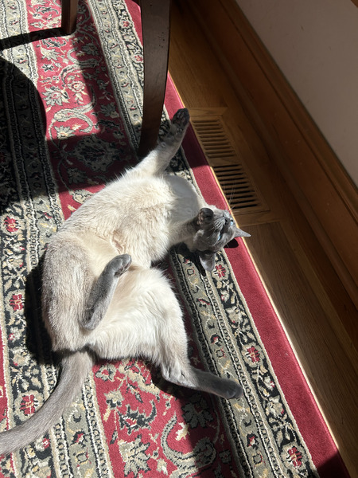
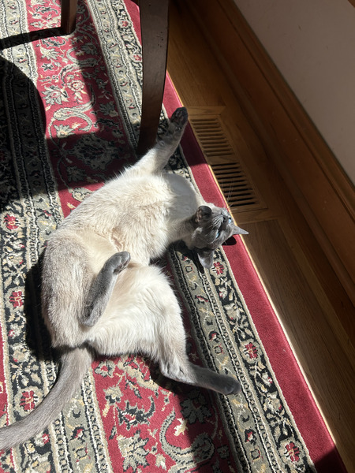

My Cat!
I enjoy spending time with my 3 year old Siamese cat, Lucy. I adopted her in April 2025 from Claws and Paws Rescue in Tucson!
 



Raising Monarch Butterflies
Since I was 7 years old I have been raising Monarch butterflies, a hobby inspired by my uncle. I've always been fascinated with their life cycle and their striking black and orange wings. The monarch butterfly population has been on the decline since the 90s, and the U.S Fish & Wildlife Service has proposed to list them as a threatened species. Public participation in conservation efforts is very imporant to save the butterflies, and it is as easy as raising a few caterpillars in your backyard!
Here are some resources to learn more about Monarchs and raising Monarch caterpillars!


Art
Under construction